Technical White Paper
From Jira Records to Forecasts, Risk and Assignments
How the Platform Engineering delivery dashboard turns ticket data into business-day SLA tracking, calibrated probabilistic forecasts, queue simulation, workload-aware assignment recommendations and rule-based text insights — the data, formulas, algorithms and validation behind each view.
Abstract
Platform Engineering (PE) receives several hundred requests a month through Jira. Leadership needs to know whether service-level agreements (SLAs) are being met; engineers need a sensible order of work; requesters need honest delivery dates; and managers need to decide who should take new tickets. This paper documents the analytics system that answers those questions from one source of truth: the Jira issue record, its custom fields and its human comments.
The system combines (i) a business-day SLA model keyed on priority and estimated size; (ii) a non-parametric execution-time model that uses recency-weighted history, a hierarchical fallback over priority × size cells, empirical-Bayes shrinkage of per-assignee effects on the log scale, and conditioning on time already spent; (iii) Apparent Tardiness Cost sequencing; (iv) a Monte Carlo multi-server queue simulation that forecasts when backlog work will start and finish; (v) a damped-trend throughput forecast with split-conformal-style intervals calibrated by rolling-origin back-testing; (vi) a greedy, explainable assignment recommender that trades off domain expertise, simulated availability, SLA feasibility and load balance; and (vii) transparent text analytics over comments (regular-expression themes with a matched-median cost estimate, business-hour response times, and lift-ranked bigrams), whose findings are turned into plain-English recommendations by deterministic templates. Writes back to Jira are guarded by a safe-mode protocol with optimistic concurrency checks, an audit log and compensating undo.
Every model was chosen and tuned by back-testing on the team's own history. At the time of writing the 4-week delivery forecast's range covered 82% of out-of-sample outcomes (nominal 80%), the in-progress P85 finish date was met by 93% of back-tested tickets (nominal 85%), and the backlog start forecast was unbiased (median error 0 business days), against a +9-day bias for the start dates recorded in Jira.
Contents
- Introduction and design principles
- System architecture
- Data acquisition and the canonical dataset
- Scope rules, time and the business calendar
- The SLA model and breach metrics
- Execution-time model (In Progress forecast)
- Sequencing with Apparent Tardiness Cost
- Backlog forecast: Monte Carlo queue simulation
- Delivery forecast: damped trend with conformal ranges
- Suggested Assignments
- Text analytics on human comments
- Generated recommendations and narrative
- Descriptive flow metrics
- On-time probability classifier (legacy)
- Writing back to Jira safely
- Verification and testing
- Limitations and threats to validity
- Future work
- References
- Appendices: parameters, data dictionary, module map
1. Introduction and design principles
Jira holds a rich but noisy record of how work flows: statuses change, dates are re-planned, sizes are often missing, and much of the real story lives in free-text comments. The dashboard's job is to turn that record into numbers people can act on, with known accuracy. Four questions drive it:
- Are we meeting our commitments? SLA compliance and breach rates against a goal of under 10% breached.
- When will work finish, and when will it start? Per-ticket P50/P85 dates for in-progress and backlog work.
- How much can we deliver? Team throughput over the next 4–12 weeks with an honest range.
- Who should do what, and what slows us down? Assignment recommendations and friction found in comments.
1.1 Design principles
| Principle | How it shows up in the code |
|---|---|
| One definition per concept | “Ticket”, “completed”, “SLA due”, “stage” and the business calendar are defined once (in_progress_report.prepare_tickets, sla_applies, executive_summary._facts) and reused by every page, so numbers agree across views. |
| Transparent before clever | Weighted empirical quantiles, explicit shrinkage, explicit rules and regular expressions. Every number can be traced to the tickets behind it. Black-box models are used only where back-tests justify them. |
| Validated by back-testing | Each forecast is re-run at past dates with only the data known then and scored against what happened. Parameters (damping, margins, fallbacks) were chosen this way, and models that did not earn their keep were removed (e.g. XGBoost, §9.5). |
| Ranges, not points | Forecasts report P50 (likely) and P85 (safe-to-commit) or a calibrated interval; the calibration itself is measured. |
| Business time | All durations are business days (or business hours) on the company calendar, matching how SLAs are written. |
| Advisory first, safe writes | Recommendations never change Jira by themselves. Writes are opt-in, localhost-only, reviewed, confirmed, concurrency-checked, audited and undoable (§15). |
| Deterministic and reproducible | Fixed random seeds, so the same data always renders the same dates; no generative model in the loop. |
2. System architecture
The dashboard is a single-process Python application served by Streamlit. A page request runs the app.py script top to bottom; the Jira dataset is fetched on demand from the sidebar and kept in the user's session (st.session_state), and each page calls a pure build_*_visuals(df) function in reports/ that returns a payload of KPIs, tables and Plotly figures. Report modules have no Streamlit dependencies in their core logic, which keeps them unit-testable.
flowchart TB
subgraph JC[Jira Cloud]
API[REST API v3
enhanced JQL search]
end
subgraph APP[Streamlit app · app.py]
CFG[config/
credentials precedence]
LOAD[data/build_dataframe_new.py
fetch + flatten]
SS[(session_state
issues DataFrame)]
UI[Pages: KPIs, tables,
Plotly charts, dialogs]
end
subgraph REP[reports/ · pure functions]
CORE[in_progress_report
scope, SLA, calendar,
execution-time model]
FACTS[executive_summary._facts
canonical ticket facts]
MODELS[backlog · forecast · assignment
conversations · SLA · size ...]
W[jira_dates / jira_assign
safe-mode writers]
end
CAL[darkstar.metrics
holiday calendar,
business hours]
AUD[(.dashboard_audit
JSONL audit log)]
CFG --> LOAD
API -- paginated issues --> LOAD --> SS --> MODELS
CORE --> FACTS --> MODELS
CAL --> CORE
MODELS --> UI
UI -- reviewed batch --> W -- re-read, update, comment --> API
W --> AUD
Figure 1. System context. Read path: Jira → DataFrame → pure report functions → UI. Write path (opt-in): UI → safe-mode writer → Jira, with an audit log.
2.1 Technology stack
| Layer | Library (version) | Used for |
|---|---|---|
| Language/runtime | Python 3.14 | All code |
| UI and serving | Streamlit 1.57 | Pages, session state, data editor, dialogs, AppTest |
| Data | pandas 3.0, NumPy 2.4 | Tabular transforms; vectorised business-day arithmetic (np.busday_count, np.busday_offset); Monte Carlo sampling (numpy.random.Generator) |
| Visualisation | Plotly 6.7 | Interactive charts |
| Machine learning | scikit-learn 1.8 | Random forest / extra trees and Platt calibration (legacy probability page, §14) |
| Calendar | holidays 0.103 | US federal holiday rules filtered to the company's observed holidays |
| Jira client | jira 3.10 | Enhanced search with nextPageToken pagination; field updates; comments |
| Standard library | re, heapq, collections.Counter, json | Text rules, priority queue for the simulation, n-gram counts, audit log |
| Testing / delivery | pytest, Streamlit AppTest, Docker, GitLab CI | Unit, back-test and UI tests; container image; pipeline |
2.2 Module dependencies
flowchart TB IPR[in_progress_report
scope · SLA table · calendar ·
history · effects · WIP · sampling] ATC[atc_sequence
ATC ordering] ES[executive_summary
_facts · stages · headlines] BR[backlog_report
queue Monte Carlo] FR[forecast_report
damped trend · conformal] SLA[service_level_agreement_report] WOM[word_of_the_month_report
Teams Conversations] DOM[domains
skill taxonomy] ASG[assignment_report] CAP[capacity_report] SZ[estimated_size_distribution_report] JD[jira_dates] JA[jira_assign] IPR --> ES & BR & FR & SLA & WOM & SZ ATC --> BR & ASG ES --> FR & SLA & SZ & ASG BR --> ASG DOM --> ASG FR --> CAP WOM --> ES JD --> JA & SLA JA --> ASG
Figure 2. Report-module dependency graph (arrows point from a module to the modules that import it). in_progress_report is the shared core.
3. Data acquisition and the canonical dataset
3.1 Extraction
The loader issues one JQL query over the DevOps and Release Management projects with a rolling 24-month window and pages through Jira Cloud's enhanced search endpoint using the opaque nextPageToken cursor:
(project = "DEVOPS" OR project = "CAR") AND created >= -730d ORDER BY assignee ASC, updated DESCOnly the fields the reports need are requested (system fields plus six custom fields), including comment and statuscategorychangedate. A full fetch returns about 6,100 issues in roughly a minute. The search response embeds at most 20 comments per issue; about 1% of issues have more, a known truncation.
flowchart TB A[JQL page
≤ 5,000 issues] --> B{nextPageToken?} B -- yes --> A B -- no --> C[Flatten fields
per issue] C --> D[Comments: drop
accountType = app] C --> E["Timestamps → UTC−6,
date fields kept UTC"] C --> F[Custom fields:
Target start/end,
size, business lead] D & E & F --> G[(Issues DataFrame
~45 columns)] G --> H[prepare_tickets:
scope + normalisation] H --> I[_facts: stage, outcome,
closed_day, sla_due, age]
Figure 3. Extraction and normalisation pipeline.
3.2 Fields that matter
| Column | Jira source | Role in the models |
|---|---|---|
| key, summary, issuetype, status | system fields | Identity, scope rules (§4), stage mapping, domain tagging (summary) |
| assignee_name, assignee_account_id | assignee | Per-person effects, queues, WIP; account id for safe assignment writes |
| priority_name → priority_bucket | priority | SLA row; ATC weight; history cells. Normalised to Urgent / High / Medium / Low/None |
| estimated_size_name → size | customfield_10968 | SLA column; history cells; ATC effort. Missing → “Unestimated” |
| planned_start_date (Target start) | customfield_10946 | Starts the SLA clock; start of execution time; earliest start in the queue |
| target_end_date (Target end) | customfield_10947 | Alternative deadline; ATC due date (“Days Left”) |
| status_category_changed | statuscategorychangedate | Completion time of Done tickets (Jira's resolution date is usually empty, and updated moves with later edits) |
| created | created | Lead time, age, demand series |
| business_lead | customfield_11751 | Requester-side grouping (scorecards, friction by lead) |
| reporter_name | reporter | First-reply time and “requester chasing” (who is the requester) |
| comments | comment (human only) | Coverage, themes, phrases, domains, silence; list of {author, created, body} |
| comment_total, bot_comment_count | comment | Data-quality counters (bots ≈ 30% of all comments) |
At the time of writing the dataset held 6,096 issues, of which 3,764 are PE tickets in SLA scope (100 open), with 11,687 human comments retained and 4,912 automation comments dropped. The full data dictionary is in Appendix B.
3.3 The facts table
executive_summary._facts(df, today, holidays) derives one row per ticket with the columns every page shares: outcome (Done, Released, Will Not Do, Rolled Back or open), is_closed, stage (Backlog, In Progress, Validating, Blocked & On Hold, Release), created_day, closed_day, start_day, target_end_day, sla_bd, sla_due, age_days and lead. Computing these once is what keeps the Executive Summary, SLA, Trend and Assignment pages consistent with each other.
4. Scope rules, time and the business calendar
4.1 What counts
- Ticket. Any issue except containers: rows whose issuetype or status is Feature or Initiative are excluded (matching on both catches mis-filed containers). People in EXCLUDED_ASSIGNEES (non-PE contributors) are removed from history.
- PE SLA scope. sla_applies() is false for the Release Management project and the “Change and Release” issue type (CAR), which follow a release process with no PE SLA.
- Completed. Status Done, timed by status_category_changed. Will Not Do and Rolled Back are closed but never judged against the SLA.
4.2 Time zones
Timestamps (created, comments, status changes) are converted to a fixed UTC−6 offset and truncated to calendar days. Target start and Target end are date-only fields stored at UTC midnight and are therefore read in UTC, which avoids shifting them a day earlier.
4.3 Business days
The company calendar is Monday–Friday minus the observed holidays in darkstar.metrics (eight US federal holidays the company closes for, with weekend observance shifts resolved by the holidays package). Holiday arrays are cached per year range. Business-day arithmetic is vectorised with NumPy:
$$\operatorname{bd}(a,b)=\max\bigl(0,\ \texttt{busday\_count}(a,b,\mathcal{H})\bigr),\qquad \operatorname{add}(a,n)=\texttt{busday\_offset}\bigl(a,\lceil n\rceil,\ \text{roll}=\text{forward},\ \mathcal{H}\bigr)\tag{1}$$where busday_count counts business days in the half-open interval \([a,b)\) and \(\mathcal{H}\) is the holiday set. Response times in comments use business hours (08:00–17:00 Pacific, nine hours per day).
5. The SLA model and breach metrics
5.1 The SLA table
The SLA is a budget of business days indexed by priority \(p\) and estimated size \(z\); unsized tickets use the Medium column (shown as “Medium* (assumed)”).
| Priority \ Size | Small | Medium | Large | XL |
|---|---|---|---|---|
| Urgent | 1 | 4 | 8 | 16 |
| High | 7 | 10 | 17 | 22 |
| Medium | 15 | 18 | 22 | 30 |
| Low / None | 30 | 33 | 37 | 45 |
Table 1. SLA_BUSINESS_DAYS (business days).
The clock starts at the ticket's Target start \(s\):
$$\text{SLA due}=\operatorname{add}\bigl(s,\ \text{SLA}(p,z)\bigr),\qquad \text{SLA used}=\frac{\operatorname{bd}(s,\ \text{today})}{\text{SLA}(p,z)}\tag{2}$$Tickets without a Target start have no clock and are reported as Not assessed (a data gap shown as a KPI), never silently counted as on time.
5.2 Two breach rates
Let \(J\) be the judged set (PE tickets with an SLA due date, excluding Will Not Do / Rolled Back). A ticket is breached if it finished after its due date or is still open past it. For a window \([t_0,t_1)\):
$$r_{\text{due}}=\frac{\lvert\{i\in J:\ \text{due}_i\in[t_0,t_1),\ \text{due}_i<\text{today},\ \text{breached}_i\}\rvert}{\lvert\{i\in J:\ \text{due}_i\in[t_0,t_1),\ \text{due}_i<\text{today}\}\rvert},\qquad r_{\text{done}}=\frac{\lvert\{i:\ \text{done}_i\in[t_0,t_1),\ \text{done}_i>\text{due}_i\}\rvert}{\lvert\{i:\ \text{done}_i\in[t_0,t_1)\}\rvert}\tag{3}$$\(r_{\text{due}}\) (“SLA came due”) is the strict cohort definition: a breach cannot hide until the ticket is finished. \(r_{\text{done}}\) (“completed late”) is the conventional completion-cohort rate. Both are shown against the 10% goal, because each alone can mislead: \(r_{\text{done}}\) improves when late work is simply left open.
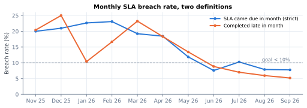
Figure 4. Monthly SLA breach rate under both definitions, last 11 full months.
5.3 Re-planning guard
Because the clock starts at Target start, moving Target start later also moves the due date. When dates are updated through the dashboard (§15), the original Target start is recorded; the SLA page re-judges re-planned tickets on their original start by default, so re-planning cannot lower the breach rate.
5.4 Risk without a forecast
Stages with no per-ticket forecast (Validating, Blocked & On Hold, Release) are classified from the SLA used: Breached if today is past the due date, At Risk once 80% of the SLA has been used, otherwise On Track.
6. Execution-time model (In Progress forecast)
The core predictive component estimates, for each in-progress ticket, the distribution of remaining business days. It is non-parametric and built from the team's own completed work. The same model supplies durations to the backlog simulation (§8) and the assignment recommender (§10).
flowchart TB H["Done tickets, last 365 d
d = bd(Target start, Done)"] --> L["y = log(1+d)
w = 0.5^(age/120)"] L --> R[Reference set:
P×S → S → P → team
first with ≥ 8 tickets] R --> B[Baseline:
weighted median of y] B --> E[Assignee and assignee×priority
effects, shrunk with k = 5] T["In-progress ticket
p, z, assignee, elapsed e"] --> S E --> S["Samples D = (e^(y+β) − 1) · f_WIP"] W["WIP factor f = clip(√(WIP/usual), 0.85, 1.5)"] --> S S --> C{"≥ 5 samples
outlast e?"} C -- yes --> Q[Remaining = D − e
weighted P50, P85] C -- no --> F["Beyond history:
P50 = 0.5e, P85 = 2e"] Q & F --> O[Finish dates, confidence,
risk vs SLA / Target end]
Figure 5. In Progress forecast pipeline (reports/in_progress_report.py).
6.1 History and weights
For each Done ticket \(i\) completed in the last 365 days with a Target start \(s_i\le e_i\), the execution time is \(d_i=\operatorname{bd}(s_i,e_i)\). Durations are strongly right-skewed (Figure 6), so the model works on \(y_i=\log(1+d_i)\). Each ticket gets an exponential recency weight with a 120-day half-life:
$$w_i = 2^{-a_i/120},\qquad a_i=\text{days since ticket } i \text{ finished}\tag{4}$$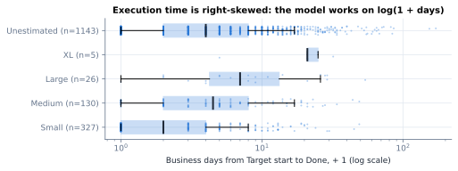
Figure 6. Execution time by estimated size, 1,631 Done tickets in the history window (log scale). Sizes separate, but overlap heavily — one reason the model conditions on more than size.
6.2 Hierarchical reference sets
For a ticket with priority \(p\) and size \(z\) the reference set \(R(p,z)\) is the first of \(\{p\times z,\ z,\ p,\ \text{team}\}\) containing at least 8 history tickets (unsized tickets skip the size levels). This is a simple, explainable form of hierarchical pooling: specific when data allow, coarser when not. The basis label (e.g. “High × Small”, “Team-wide”) is shown in the UI.
6.3 Weighted quantiles
All quantiles are weighted, with linear interpolation on mid-point cumulative weights (a weighted analogue of the Hyndman–Fan type-5 definition [17]). For sorted values \(v_{(1)}\le\dots\le v_{(n)}\) with weights \(w_{(k)}\):
$$c_k=\frac{\sum_{l\le k}w_{(l)}-\tfrac12 w_{(k)}}{\sum_l w_{(l)}},\qquad \hat Q(q)=\operatorname{interp}\bigl(q;\ c_{1..n},\ v_{(1..n)}\bigr)\tag{5}$$6.4 Assignee speed: empirical-Bayes shrinkage on the log scale
Let \(b_i=\hat Q_{0.5}\bigl(y\mid R(p_i,z_i)\bigr)\) be ticket \(i\)'s cell baseline and \(r_i=y_i-b_i\) its residual. A person's effect is a weighted mean residual, shrunk toward zero (the team) with a pseudo-count \(k=5\), and a nested assignee × priority effect is shrunk toward the person's overall effect:
$$\alpha_a=\operatorname{clip}\!\left(\frac{\sum_{i\in a}w_i r_i}{\sum_{i\in a}w_i+k},\ \pm1.5\right),\qquad \beta_{a,p}=\operatorname{clip}\!\left(\alpha_a+\frac{\sum_{i\in a,p}w_i\,(r_i-\alpha_a)}{\sum_{i\in a,p}w_i+k},\ \pm1.5\right)\tag{6}$$This is the posterior mean under a normal prior centred at zero with prior weight \(k\) — the James–Stein / empirical-Bayes idea [7] in its simplest form. With few tickets the effect is pulled to the team; one slow ticket cannot label someone as slow (Figure 7, right). The clip at \(\pm1.5\) bounds any effect to roughly a 4.5× speed ratio. Because the effect is additive on the log scale it acts multiplicatively on durations.
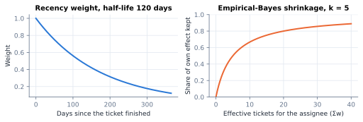
Figure 7. Left: recency weight (Eq. 4). Right: share of a person's raw effect retained as a function of their effective sample size, \(\sum w/(\sum w+5)\).
6.5 Current load: a dampened Little's-law factor
Little's law, \(L=\lambda W\) [2], implies that at a fixed completion rate, cycle time grows with work in progress. Each person's usual WIP is estimated as busy business days over the last 180 days divided by business days in the window; current WIP is their count of in-progress tickets. The factor is dampened with a square root and bounded, because people do not parallelise perfectly and short-term WIP is noisy:
$$f_a=\operatorname{clip}\!\left(\sqrt{\frac{\text{WIP}^{\text{now}}_a}{\max(\overline{\text{WIP}}_a,1)}},\ 0.85,\ 1.5\right)\tag{7}$$6.6 Conditioning on time already spent
The candidate total durations for a ticket by assignee \(a\) are the reference set's durations, adjusted:
$$D_j=\bigl(e^{\,y_j+\beta_{a,p}}-1\bigr)\,f_a,\qquad j\in R(p,z)\tag{8}$$A ticket that has already run \(e\) business days can only have a total duration greater than \(e\). The model therefore keeps the comparable tickets that outlasted \(e\) and forecasts the remainder from them — the empirical analogue of a conditional survival distribution, \(P(D-e\le t\mid D>e)\):
$$\text{P50},\ \text{P85}=\hat Q_{0.50},\ \hat Q_{0.85}\Bigl(\{D_j-e : D_j>e\};\ w_j\Bigr)\quad\text{if}\ \lvert\{D_j>e\}\rvert\ge5\tag{9}$$Without this step, old tickets are forecast to finish “yesterday”. When fewer than five comparable tickets ran that long, the ticket is beyond history and the forecast leans on the time already spent: P50 \(=\max(1,\,0.5e)\), P85 \(=\max(2,\,2e)\) — multiples chosen by back-test so that about 50% and 85% of such tickets finish by them.
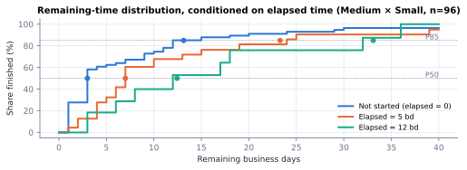
Figure 8. Weighted remaining-time CDFs for one reference cell, before start and after 5 and 12 business days. Dots mark P50 and P85. As time passes the remaining-time distribution shifts and widens rather than collapsing to zero.
6.7 Confidence, sampling and risk
Confidence uses Kish's effective sample size [15] of the conditioning sample, \(n_{\text{eff}}=(\sum w)^2/\sum w^2\): High when \(n_{\text{eff}}\ge30\) and the basis is a full priority × size cell, Medium when \(n_{\text{eff}}\ge10\), otherwise Low. Sampling (needed by the simulations) draws a weighted bootstrap of the conditioning sample; beyond history it draws from a lognormal matched to the two quantiles, \(\mu=\ln \text{P50},\ \sigma=\ln(\text{P85}/\text{P50})/z_{0.85}\), with \(z_{0.85}=1.0364\). Dates are \(\operatorname{add}(\text{today},\text{P50})\) and \(\operatorname{add}(\text{today},\text{P85})\). Risk against a deadline \(T\) (SLA due by default, or Target end, or the earlier of both):
| Status | Rule (first match) |
|---|---|
| ✖ Breached | today > T |
| ▲ Likely Late | P50 date > T |
| ! At Risk | P85 date > T |
| ✓ On Track | otherwise |
6.8 Validation
Back-tested on 243 past tickets, each forecast at a date when it was still in progress using only history available then: 61% finished by P50 and 93% by P85 (targets 50% / 85%), median absolute error one business day. The model is slightly conservative; because only tickets that eventually finished can be scored, very long-running tickets are under-represented (a survivorship caveat).
7. Sequencing with Apparent Tardiness Cost
Ordering one person's tickets to minimise total weighted tardiness, \(\sum_j w_j\max(0,C_j-d_j)\), is the single-machine problem \(1\,\|\,\sum w_jT_j\), which is strongly NP-hard [11]. The dashboard uses the Apparent Tardiness Cost (ATC) dispatching rule of Vepsalainen and Morton [1], a well-studied heuristic for it [12]. Starting at \(t=0\), it repeatedly schedules the ticket with the highest index and advances the clock:
$$I_j(t)=\frac{w_j}{p_j}\exp\!\left(-\frac{\max(d_j-p_j-t,\,0)}{K\,\bar p}\right),\qquad t\leftarrow t+p_{j^*}\tag{10}$$\(w_j/p_j\) is the weighted-shortest-processing-time ratio; the exponential term rises from ~0 to 1 as the ticket's slack runs out; \(\bar p\) is the mean effort of the remaining tickets and \(K=2\) the look-ahead.
| Input | Definition |
|---|---|
| Effort \(p_j\) | Upper end of the size's range: Small 1, Medium 3, Large 5, XL 10, unsized 2 days |
| Due \(d_j\) | Days until Target end; 30 if missing (so aging alone decides) |
| Weight \(w_j\) | Priority base (None 1, Low 2, Medium 4, High 8) × \((1+\text{days old}/30)\): weight doubles every 30 days, preventing starvation |
| Tiers | Urgent/Critical first (earliest due first); then ATC; On Hold, then Blocked appended; Validating excluded |
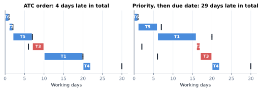
Figure 9. The six-ticket worked example from the README. Bars are scheduled work, ticks are due dates, red bars finish late. The workload is infeasible (10 days of work due within 7), and ATC limits the damage to one low-priority ticket, versus a Medium ticket due in two days waiting behind a 10-day ticket under the naive sort.
Complexity is \(O(n^2)\) per person, negligible at the queue lengths seen (typically under 20). The same function orders each backlog queue in §8 and the global assignment queue in §10.
8. Backlog forecast: Monte Carlo queue simulation
A backlog ticket's start date depends on everything ahead of it: the assignee's current in-progress work and the backlog tickets ATC places earlier. The dashboard models each assignee as a multi-server queue and simulates it.
8.1 Model
- Servers. \(m_a=\max(1,\operatorname{round}(\overline{\text{WIP}}_a))\) concurrent slots — the person's usual parallelism.
- Initial state. Each in-progress ticket occupies a slot for a remaining time drawn from §6 (with the WIP factor).
- Arrivals. Backlog tickets in ATC order; ticket \(j\) cannot start before its Target start (\(\text{earliest}_j=\operatorname{bd}(\text{today},s_j)\)).
- Service times. Drawn from §6 with elapsed = 0 and no WIP factor, since the queue itself models the load.
for s in 1..S: # S = 1,000 simulations, seed 7
busy = min-heap of in-progress remaining times (draw s)
clock = 0
for j in queue (ATC order):
while len(busy) >= m: # wait for a free slot
clock = max(clock, heappop(busy))
start[j,s] = max(clock, earliest[j])
finish[j,s] = start[j,s] + service[j][s]
heappush(busy, finish[j,s])
Projected Start = median_s start[j,·]; Finish P50/P85 = quantiles of finish[j,·]
Free by = quantiles over s of max(max_j finish[j,s], in-progress clear time)Algorithm 1. backlog_report._simulate_queue; \(O(S\cdot n\log m)\) per assignee.
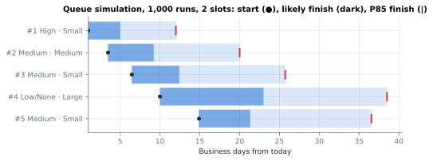
Figure 10. Illustrative queue (two slots, two tickets in progress, five in the backlog) simulated with the real duration model. Uncertainty compounds down the queue: later tickets have wider start-to-P85 spans.
8.2 Start-date calibration
The start forecast was back-tested by rebuilding the backlog as it was at five past dates (Jul 20 – Sep 14, 2026) from Jira change history — statuses, assignees and Target starts as of each date — and comparing each Projected Start with when the ticket actually left the backlog (266 predictions, 157 tickets).
| Prediction | Typical miss | Within 5 bd | Started by that date | Bias |
|---|---|---|---|---|
| Projected Start (P50) | 8 bd | 39% | 52% | none |
| Simulated P85 start | 11.5 bd | 30% | 65% (nominal 85%) | early |
| Target start in Jira | 11 bd | 33% | 12% | starts ~11 bd later |
Table 2. Start-date back-test.
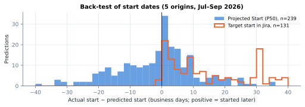
Figure 11. Distribution of start-date errors from the same back-test (predictions whose ticket started; clipped at ±40). Projected Start is centred on zero; Jira's Target start is systematically early.
The simulated P85 was too optimistic (65% coverage) because the simulation does not capture re-prioritisation, interruptions and new urgent arrivals. It was replaced by an empirically calibrated Safe Start: Projected Start + 16 business days for queue positions 1–3 and + 9 for position 4+, the margins that made 85% of tickets start by them (84% out of sample). Start Confidence (High / Medium / Low) is reported by queue position. This is a deliberate pattern in the system: when a model's quantile is miscalibrated, calibrate it on outcomes rather than trust the model's internal uncertainty.
9. Delivery forecast: damped trend with conformal ranges
The team-level question — how many tickets will we deliver in the next \(h\) weeks — is a short univariate time series problem: weekly Done counts, full Monday–Sunday weeks only, about 100 weeks of history.
9.1 Central forecast
Fit ordinary least squares to the log of the last \(W=12\) weeks, \(y_t=\ln(1+x_t)=a+bt\), take the fitted level at the last week \(\ell=a+b(W-1)\), and project with a damped slope (\(\phi=0.8\)), in the spirit of Gardner and McKenzie's damped trend [3]:
$$\hat y_{T+h}=\ell+b\sum_{i=1}^{h}\phi^{i},\qquad \hat x_{T+h}=\max\bigl(e^{\hat y_{T+h}}-1,\ 0\bigr),\qquad \hat C_h=\sum_{k=1}^{h}\hat x_{T+k}\tag{11}$$Since \(\sum_{i\ge1}\phi^i=\phi/(1-\phi)=4\), total future log-growth is capped at four weeks' worth of the current slope: growth is assumed to slow, not continue forever.
9.2 Rolling-origin back-test
For every past week \(o\ge20\) the forecast is re-run on \(x_{1..o}\) only and each cumulative horizon is scored with a log error [4]:
$$\varepsilon_{o,h}=\ln\frac{\max(A_{o,h},1)}{\max(\hat C_{o,h},1)},\qquad A_{o,h}=\sum_{k=1}^{h}x_{o+k}\tag{12}$$9.3 Conformal-style intervals
The range at horizon \(h\) is the central forecast scaled by the empirical 10th and 90th percentiles of the most recent 52 past errors at that horizon — a split-conformal construction on forecast residuals [5, 6]:
$$\bigl[\hat C_h\,e^{\,q_{0.10}(\varepsilon_{\cdot,h})},\ \hat C_h\,e^{\,q_{0.90}(\varepsilon_{\cdot,h})}\bigr]\tag{13}$$Horizons beyond 12 weeks reuse the 12-week spread. With fewer than 12 scored errors the range falls back to a bootstrap of recent weeks (4,000 resamples). The central estimate is deliberately not bias-corrected by the median error: back-tested, doing so was no better calibrated and less accurate.
flowchart TB X[Weekly Done counts
full weeks] --> BT[For each past origin o:
fit on x₁..ₒ, forecast 1..12] BT --> ER["Log errors ε(o,h)
vs actual totals"] ER --> QS[Per horizon: q10, q90
of last 52 errors] X --> DT[Damped trend on
last 12 weeks] DT --> CF[Cumulative forecast Ĉh] QS & CF --> RG[Range Ĉh·e^q10 … Ĉh·e^q90] RG --> UI[Cards 4/8/12 w ·
“by when?” calculator ·
accuracy chart]
Figure 12. Forecast and calibration loop (reports/forecast_report.py).

Figure 13. Weekly delivery with the 12-week forecast and calibrated range. Current cumulative forecasts: 4 weeks ≈ 324 (257–512), 8 weeks ≈ 661 (555–1,183), 12 weeks ≈ 1,004 (826–1,942).
9.4 Measured accuracy
The accuracy function scores each of the last 40 forecasts with a range built only from errors whose outcome was already known at that origin (no look-ahead):
| Horizon | Actual inside the range | Median |error| of central forecast |
|---|---|---|
| 4 weeks | 82% | 22% |
| 8 weeks | 68% | 23% |
| 12 weeks | 60% | 24% |
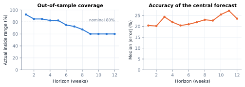
Figure 14. Out-of-sample coverage and error by horizon. Overlapping errors on neighbouring origins are autocorrelated, so a nominal 80% band covers about 7 in 10 outcomes at longer horizons; misses were mostly above the range, during a period of fast growth in 2026.
Commitment calculator. For a project of \(N\) tickets using share \(\rho\) of capacity, the likely completion week is \(\min\{h:\rho\,\hat C_h\ge N\}\) and the safe week is \(\min\{h:\rho\,L_h\ge N\}\), where \(L_h\) is the low end of the range.
9.5 Why XGBoost was removed
The previous forecast used gradient-boosted trees on about twelve monthly rows. Its multi-step forecast shifted every feature rather than only the lags, applied day-of-week features to month-start dates, and produced a ±MAE band that could go negative. With so little data, a two-parameter trend with empirically calibrated errors is both more accurate and more honest. The Capacity page now uses the same engine.
10. Suggested Assignments
For each open PE ticket that is unassigned or in Triage / Reviewing, the recommender proposes an owner, a backup and a cross-training “stretch” candidate, each with a reason. It reuses the domain taxonomy, the duration model and the queue simulation; it uses Jira data only.
10.1 Domain tagging
A taxonomy of 33 skill domains (e.g. GKE, BigQuery/Data, IAM/RBAC, Terraform, GitLab), each a list of case-insensitive regular expressions, is shared verbatim with the team's Intake dashboard; a unit test parses both sources and fails if they drift. A ticket's text is its summary plus all human comments; it is tagged with every matching domain, and its primary domain is the first match in a priority list that ranks niche domains above broad ones. Adding comments raised coverage from 67% (titles alone) to 80% of PE tickets.
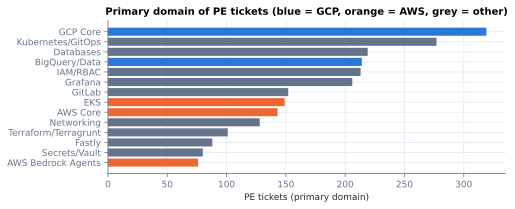
Figure 15. Primary domain of PE tickets (top 14).
10.2 Expertise
Expertise of person \(a\) in domain \(d\) is a recency-weighted count of their Done (weight 1) and active (weight 0.5) tickets tagged with \(d\), with a 120-day half-life, normalised within the domain:
$$E_{d,a}=\sum_{i\in a,\ d\in\text{tags}(i)}2^{-\text{age}_i/120}\cdot\begin{cases}1&\text{Done}\\0.5&\text{active}\end{cases},\qquad \tilde e_{a}=\frac{E_{d,a}}{\max_b E_{d,b}}\tag{14}$$10.3 Availability and SLA feasibility
For each candidate, the ticket is inserted into that person's backlog, the queue is re-ordered by ATC, and the queue simulation of §8 is run (1,000 draws). This yields the ticket's likely start, its P85 finish \(F_a\) (business days from today) and the P85 of its work time. Availability is relative to the slowest option: \(v_a=1-F_a/\max_b F_b\). The ticket fits the SLA with \(a\) if the P85 finish date is on or before the SLA due date; with no Target start yet, if the P85 work time fits within the SLA budget.
10.4 Score and ranking
$$S_a=0.6\,\tilde e_a+0.4\,v_a-0.15\cdot\mathbb 1\bigl[\text{WIP}^{\text{now}}_a\ge1.3\max(\overline{\text{WIP}}_a,1)\bigr]-0.08\,g_a\tag{15}$$where \(g_a\) is the number of tickets already given to \(a\) earlier in the same plan. Candidates are ranked lexicographically: SLA-feasible first, then by \(S_a\). The top candidate is suggested, the next is the backup, and the stretch candidate is the earliest-finishing remaining person with some but limited experience (\(0<\tilde e_a\le0.5\)). Candidates are people with at least five PE tickets completed in the last 90 days, minus people who have left the team.
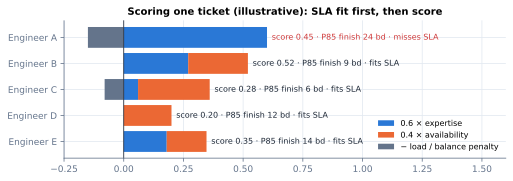
Figure 16. Illustrative scoring of one ticket. The top expert (A) is overloaded and would miss the SLA, so the SLA-feasible candidate with the best score (B) is suggested.
10.5 Greedy sequential planning
flowchart TB Q[Queue: open PE tickets,
unassigned or triage] --> O[Order globally by ATC] O --> N{Next ticket} N --> T[Try in every candidate's queue:
ATC re-order + 1,000-run simulation] T --> SC[Score: expertise, availability,
load, plan balance; SLA fit] SC --> RK[Rank: fits SLA, then score] RK --> PICK[Suggested · Backup · Stretch
+ templated reason] PICK --> ADD["Add ticket to the chosen
person's simulated queue, g += 1"] ADD --> N N -- none left --> OUT[Plan table · Compare Options ·
Who Knows What · concentration]
Figure 17. The planning loop (reports/assignment_report.py).
Tickets are planned in ATC order and each suggestion is committed to the person's simulated queue before the next ticket is scored. Later tickets therefore see the load created by earlier suggestions, and the balance penalty spreads work. This is a greedy heuristic for what is formally a generalised-assignment problem with stochastic processing times; it is chosen for explainability (every choice has a local reason) and speed. Cost is \(O(T\cdot P\cdot S\cdot Q\log m)\) for \(T\) tickets, \(P\) candidates, \(S\) simulations and queue length \(Q\); in practice about 18 tickets × 13 people renders in a few seconds.
Reasons are generated from the same quantities: “≈7 recent GKE tickets; likely start Oct 12, done by Oct 20”, with clauses appended when no one fits the SLA or the person is above their usual load. A concentration table reports, per domain, the top person's share of recent experience, highlighting single-person dependencies for cross-training.
11. Text analytics on human comments
Comments explain why work is slow. The Teams Conversations page applies transparent, auditable methods rather than a general-purpose sentiment model: the earlier VADER sentiment [20] was removed because general lexicons misread ordinary DevOps vocabulary (“kill”, “fail”, “block”) and it had been run on titles, not comments.
flowchart TB C[Comments
bots removed at load] --> M[Strip markup:
code/quote blocks, mentions,
links, images, ticket keys] M --> TH[Theme regexes
first excerpt per theme] M --> BG[Tokenise → stopwords →
bigrams, once per comment,
names removed] C --> FR[First reply by a non-requester
in business hours] C --> HO[Speaker changes
= back-and-forth] TH --> XD[Extra days vs matched
tickets without theme] XD --> RK[Rank causes by total
extra days → actions] BG --> LF[Lift vs previous 3 months
→ Phrase of the Month]
Figure 18. Comment-analysis pipeline (reports/word_of_the_month_report.py).
11.1 Cleaning
Comments whose author account type is app (e.g. Automation for Jira) are dropped at load. Jira wiki markup is removed by six regular expressions: {code}/{noformat}/{quote} blocks, [~accountid:…] mentions, [text|link] links, bare URLs, !image! embeds and ticket keys.
11.2 Friction themes and their cost
Seven themes are defined as word-boundary regular expressions (e.g. Waiting / blocked: \b(?:waiting (?:on|for)|blocked|blocker|dependenc(?:y|ies)|depends on|on hold)\b). A ticket has a theme if any human comment matches; “Chasing / follow-up” counts only the requester's own comments. The cost of theme \(\theta\) is estimated by matching each themed ticket to similar tickets without the theme:
$$\Delta_i=c_i-\operatorname{median}\{c_j:\ j\notin\theta,\ j\sim i\},\qquad \text{Cost}(\theta)=\max\bigl(0,\operatorname{median}_{i\in\theta}\Delta_i\bigr)\cdot n_\theta\tag{16}$$where \(c\) is cycle time (Target start → Done, business days) and \(j\sim i\) means the same priority × size cell, falling back to the same priority and then all tickets when fewer than eight matches exist. This is coarsened exact matching in miniature. Themes are ranked by total extra days; the top three causes (Chasing is a symptom and is never recommended) become recommendations, each paired with a process change.
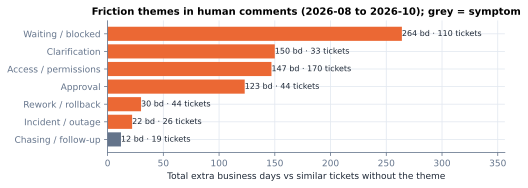
Figure 19. Total extra business days by theme for tickets completed Aug–Oct 2026.
11.3 Conversation health
- First reply: business hours from creation to the first human comment by anyone other than the reporter (median currently ≈ 15 business hours).
- Back-and-forth: the number of speaker changes in the chronologically ordered comment list, \(\sum_k\mathbb 1[\text{author}_k\ne\text{author}_{k-1}]\).
- Comment coverage: share of completed tickets with at least one human comment (target 80%; currently 69%).
11.4 Phrases and the Phrase of the Month
Tokens matching [a-z][a-z'\-]+ longer than two characters are kept after a stop-word list; adjacent pairs form bigrams [18], counted at most once per comment so one long comment cannot dominate, and any bigram containing part of a person's name is dropped. A phrase is emerging when its count \(n\) in the selected months is high relative to the previous three months, scaled for overall phrase volume \(s=N_{\text{now}}/N_{\text{base}}\) (comments have grown longer over time), with add-one smoothing:
$$\text{Lift}=\frac{n+1}{s\cdot n_{\text{base}}+1},\qquad n\ge4\tag{17}$$The highest-lift phrase is the Phrase of the Month.
12. Generated recommendations and narrative
All text the dashboard writes — headlines, “why this needs attention”, assignment reasons and process recommendations — is produced by deterministic, rule-based templates over computed facts (classic template natural-language generation [19]). No large language model is involved. Every sentence is therefore reproducible, testable and traceable to a number on the same page.
12.1 Executive headlines
| Headline | Rule | Tone |
|---|---|---|
| SLA compliance trend | Last full month vs six months earlier (current partial month excluded) | ✓ if ≥ 90% target, else ! |
| Throughput | Completed in the lookback window vs the previous window, % change | ✓ if up, ! if down |
| Net flow | Closed − created in the window | ✓ shrinking, ! growing |
| SLA risk | Counts of open Breached and Likely Late (from the forecasts) | ✖ if any breached, else ! |
| In progress on track | On Track / total in progress | • info |
| Blocked / On Hold | Current counts, if any | ! |
| Biggest friction | Top theme by total extra days (§11.2) | • info |
12.2 Needs Attention
Each open ticket receives the first applicable reason: “SLA breached \(n\) business days ago”, “Forecast to miss its SLA”, “Blocked and past its Target End Date”, or “Waiting \(n\) business days, longer than its \(k\)-day SLA”. The list is sorted by risk severity, then priority, then days past SLA, then age, and truncated to ten.
12.3 Sizing recommendations
The sizing guide is derived from the team's completed work: the boundary between adjacent sizes is the geometric mean of their median work times (each with ≥ 10 tickets, otherwise a default), \(u_k=\operatorname{round}\sqrt{m_k\,m_{k+1}}\), enforced to be increasing. The geometric mean is the natural midpoint on the log scale where durations live.
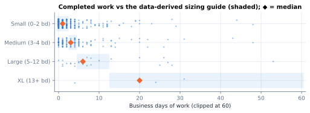
Figure 20. Completed work (last 180 days) against the derived guide; 55% of sized tickets landed in their size's range.
| Recommendation | Trigger |
|---|---|
| Size at intake | New-ticket size coverage below 90%; names the least-sized groups with ≥ 5 tickets |
| “X is often smaller work” | ≥ 40% of a size's tickets finished below its range |
| “X is often bigger than it looks” | ≥ 30% finished above its range |
| Revisit the SLA for unsized tickets | Unsized median work maps to a size other than the assumed Medium |
| Split XL work | XL SLA-met rate below the lowest of Small and Medium |
13. Descriptive flow metrics
Several pages are descriptive rather than predictive; their value comes from correct definitions.
| Metric | Definition (business days unless stated) |
|---|---|
| Lead time | \(\operatorname{bd}(\text{created},\text{done})\) — what the requester experiences |
| Waiting / in progress | created → Target start / Target start → done (from creation when Target start is earlier) |
| Flow efficiency | \(\sum \text{in progress}\,/\,\sum\text{lead time}\), over tickets with a Target start [13, 14] |
| Service-level expectation | Empirical P50 / P85 / P95 of lead time for tickets completed in the last 90 days |
| SLA reality check | Per priority × size: P85 of in-progress time ÷ that cell's SLA (>100% = SLA tighter than practice) |
| Improvement scorecard | Last full month vs the mean of the three months before, with a “better when” direction per metric |
| Weeks of work queued | (Backlog + In Progress) ÷ mean weekly delivery over the last 4 weeks |
| Open-work age trend | Median and P75 age of tickets open at each week end, reconstructed from created/closed dates |
| Silence | Business days since the last human comment (or since creation) |
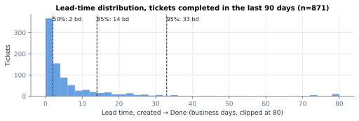
Figure 21. Lead time of 871 tickets completed in the last 90 days: half within 2 business days, 85% within 14, 95% within 33. The long right tail is why the dashboard quotes percentiles, never means.
14. On-time probability classifier (legacy)
The “Probability of completion on time” page predates the forecasting work above and is the only supervised machine-learning model in the system. It estimates \(P(\text{done by Target end})\) for a ticket.
- Label. On time if the completion date, adjusted for a smoothed validation delay (fractional days, clipped at 0, outlier-trimmed globally), is on or before the deadline.
- Features. Priority and assignee (one-hot); budget days (deadline − created); recent velocity per assignee and priority; done counts; on-time rates and schedule adherence \(=\max(0,1-\text{days late}/7)\) per assignee and priority; open backlog per assignee and assignee × priority; gaps and ratios between budget and velocity.
- Smoothing. Group rates use a Bayesian average \(\dfrac{\sum y+k\,\bar y}{n+k}\) with \(k=8\); during training, leave-one-out versions (subtracting the row's own label) prevent target leakage.
- Models. Random forest [8] (1,500 trees, balanced-subsample class weights) and extremely randomised trees [9] (1,500 trees, balanced) compete on a time-ordered holdout (most recent 20%); the winner is refit on all data and calibrated with Platt's sigmoid method [10] via 3-fold CalibratedClassifierCV [16].
15. Writing back to Jira safely
Two features write to Jira: updating Target start/end from the backlog forecast, and assigning tickets from the assignment plan. Both use the same protocol (reports/jira_dates.py, reports/jira_assign.py).
sequenceDiagram
autonumber
actor U as Engineer
participant D as Dashboard (localhost)
participant J as Jira
participant A as Audit log (JSONL)
U->>D: Open dialog
D->>D: write_permission: JIRA_WRITE_ENABLED in .env AND Host is localhost
D-->>U: Proposals, nothing selected
U->>D: Tick rows, edit values
D->>D: validate (batch ≤ 25, account id known, dates sane)
D-->>U: Dry run of exact changes
U->>D: Type "ASSIGN n" / "UPDATE n"
loop each selected ticket
D->>J: GET issue (fresh read)
alt value changed since loaded
D->>A: record skipped
else unchanged
D->>J: PUT field (account id / dates)
D->>J: POST comment (what, why, batch id)
D->>A: record updated (old → new)
end
end
U->>D: Undo last batch (type "UNDO")
D->>J: GET issue
alt still holds what the batch wrote
D->>J: restore previous value + comment
else changed again
D->>A: record skipped
end
Figure 22. Safe-mode write protocol.
| Safeguard | Mechanism |
|---|---|
| Off by default | JIRA_WRITE_ENABLED read live from the project's git-ignored .env on every rerun; buttons rendered disabled with the reason as a tooltip |
| Local only | The request's Host header must be localhost/127.0.0.1/::1, since the shared deployment has no login |
| Human in the loop | Nothing preselected; dry run; typed confirmation phrase containing the count |
| Identity | Assignments use Jira account ids observed on the person's own tickets, never a name lookup |
| Concurrency | Optimistic check: re-read immediately before writing and skip if the value differs from what was reviewed (compare-and-set semantics) |
| Traceability | Jira comment on every change; append-only JSONL audit with old/new values, actor and batch id |
| Reversibility | Compensating undo of the last batch, applied only where Jira still holds the written value |
| Metric integrity | SLA re-judged on original Target starts from the audit log (§5.3) |
16. Verification and testing
The suite contains over 400 automated tests across two virtual environments (the Streamlit app and the FastAPI “darkstar” service pin incompatible Starlette versions). Testing has three layers:
- Unit and property tests on synthetic data. Fixtures build small Jira-shaped DataFrames relative to “today” and the holiday calendar, then pin behaviour: scope rules, SLA arithmetic, risk labels, shrinkage direction, conditioning on elapsed time, queue ordering, sizing-guide monotonicity, theme tagging, the taxonomy matching darkstar's copy, the expert being chosen when available and not when the SLA cannot be met, departed members never being suggested, and the plan spreading work.
- Writer tests against a fake Jira. An in-memory Jira double records updates and comments, so tests verify permissions, validation, skip-on-concurrent-change, failure isolation, audit records and undo without touching a real instance.
- UI tests with Streamlit AppTest. Pages are rendered headlessly with fixture data and checked for exceptions and key widgets.
Model quality is validated separately by the back-tests in §6.8, §8.2 and §9.4, which use only information available at each historical origin. CI (GitLab) installs only the service's requirements, so tests that need Plotly skip themselves there and run in the app environment.
17. Limitations and threats to validity
- Data quality drives everything. The SLA clock depends on Target start, which is often edited (in the back-test window Target start was changed 686 times and Target end 1,082 times across 157 tickets). Unsized tickets are judged as Medium. Missing Target starts make tickets unassessable.
- Survivorship. Execution-time history contains only finished tickets; abandoned or very long tickets are under-represented, partly offset by the beyond-history rule.
- Non-stationarity. Team composition, intake processes and sizing adoption (≈ 4% → ≈ 60% of new tickets in 2026) changed quickly. Recency weighting and short trend windows mitigate but do not remove this; coverage fell at longer horizons during rapid growth.
- Interval coverage under dependence. Conformal guarantees assume exchangeability; overlapping weekly windows are autocorrelated, which is why nominal 80% bands cover about 70% at 8–12 weeks.
- Queue realism. The simulation ignores pre-emption by new urgent work, holidays of individuals and re-prioritisation; the empirically calibrated Safe Start compensates.
- Text signals. Regex themes have imperfect precision and recall and are correlated with ticket length; results are associations. Comments beyond the first 20 per ticket are not loaded.
- Assignment effects are unmeasured. The recommender is validated for internal consistency, not yet for causal impact on SLA outcomes.
- Ethics. Per-person views are for balancing work and spotting gaps, not for performance evaluation; shrinkage avoids over-reading small samples, and the paper's figures name no individuals.
18. Future work
- Measure the recommender prospectively. Log suggested vs actual assignee and compare SLA outcomes for followed vs not-followed suggestions (an observational A/B), before tuning weights.
- Re-validate or retire the on-time classifier with rolling-origin evaluation, reliability diagrams and Brier score; consider replacing it with the execution-time model's P(finish ≤ deadline), which is already calibrated.
- Time-to-event modelling. A Kaplan–Meier or Cox-style survival model would use censored (still-open) tickets directly instead of conditioning on finished ones.
- Adaptive conformal intervals (e.g. ACI) to restore coverage under drift at longer horizons.
- Load all comments via the per-issue comment endpoint for the ≈ 1% of tickets with more than 20.
- Snapshot store. Persist daily facts so trends and back-tests no longer need to be reconstructed from change history.
19. References
- Vepsalainen, A. P. J., & Morton, T. E. (1987). Priority rules for job shops with weighted tardiness costs. Management Science, 33(8), 1035–1047.
- Little, J. D. C. (1961). A proof for the queuing formula: L = λW. Operations Research, 9(3), 383–387.
- Gardner, E. S., Jr., & McKenzie, E. (1985). Forecasting trends in time series. Management Science, 31(10), 1237–1246.
- Hyndman, R. J., & Athanasopoulos, G. (2021). Forecasting: Principles and Practice (3rd ed.). OTexts. (Time-series cross-validation, §5.10.)
- Vovk, V., Gammerman, A., & Shafer, G. (2005). Algorithmic Learning in a Random World. Springer.
- Stankevičiūtė, K., Alaa, A. M., & van der Schaar, M. (2021). Conformal time-series forecasting. Advances in Neural Information Processing Systems, 34.
- Efron, B., & Morris, C. (1975). Data analysis using Stein's estimator and its generalizations. Journal of the American Statistical Association, 70(350), 311–319.
- Breiman, L. (2001). Random forests. Machine Learning, 45(1), 5–32.
- Geurts, P., Ernst, D., & Wehenkel, L. (2006). Extremely randomized trees. Machine Learning, 63(1), 3–42.
- Platt, J. C. (1999). Probabilistic outputs for support vector machines and comparisons to regularized likelihood methods. In Advances in Large Margin Classifiers (pp. 61–74). MIT Press.
- Lenstra, J. K., Rinnooy Kan, A. H. G., & Brucker, P. (1977). Complexity of machine scheduling problems. Annals of Discrete Mathematics, 1, 343–362.
- Pinedo, M. L. (2016). Scheduling: Theory, Algorithms, and Systems (5th ed.). Springer.
- Vacanti, D. S. (2015). Actionable Agile Metrics for Predictability. ActionableAgile Press.
- Anderson, D. J. (2010). Kanban: Successful Evolutionary Change for Your Technology Business. Blue Hole Press.
- Kish, L. (1965). Survey Sampling. Wiley.
- Pedregosa, F., et al. (2011). Scikit-learn: Machine learning in Python. Journal of Machine Learning Research, 12, 2825–2830.
- Hyndman, R. J., & Fan, Y. (1996). Sample quantiles in statistical packages. The American Statistician, 50(4), 361–365.
- Manning, C. D., & Schütze, H. (1999). Foundations of Statistical Natural Language Processing (Ch. 5, Collocations). MIT Press.
- Reiter, E., & Dale, R. (2000). Building Natural Language Generation Systems. Cambridge University Press.
- Hutto, C. J., & Gilbert, E. (2014). VADER: A parsimonious rule-based model for sentiment analysis of social media text. Proceedings of ICWSM, 8(1), 216–225.
- Harris, C. R., et al. (2020). Array programming with NumPy. Nature, 585, 357–362.
- McKinney, W. (2010). Data structures for statistical computing in Python. Proceedings of the 9th Python in Science Conference, 56–61.
- Efron, B., & Tibshirani, R. J. (1993). An Introduction to the Bootstrap. Chapman & Hall.
- Metropolis, N., & Ulam, S. (1949). The Monte Carlo method. Journal of the American Statistical Association, 44(247), 335–341.
- Atlassian. Jira Cloud Platform REST API v3: issue search (enhanced JQL search with nextPageToken), edit issue, add comment. developer.atlassian.com.
- Streamlit Inc. Streamlit documentation: session state, dialogs, data editor, AppTest. docs.streamlit.io.
Appendix A. Parameters
| Constant | Value | Module | Meaning |
|---|---|---|---|
| HISTORY_DAYS | 365 | in_progress_report | Done-ticket window for execution time |
| RECENCY_HALF_LIFE_DAYS | 120 | in_progress_report | Half-life of history weights |
| MIN_CELL_SAMPLES | 8 | in_progress_report | Minimum tickets per reference cell |
| SHRINK_K | 5 | in_progress_report | Shrinkage pseudo-count |
| MAX_LOG_EFFECT | 1.5 | in_progress_report | Effect clip on log scale |
| MIN_CONDITIONAL_SAMPLES | 5 | in_progress_report | Below this: beyond-history rule |
| BEYOND_HISTORY_P50 / P85 | 0.5 / 2.0 | in_progress_report | Multiples of elapsed time |
| WIP_WINDOW_DAYS | 180 | in_progress_report | Window for usual WIP |
| WIP_FACTOR_BOUNDS | 0.85–1.5 | in_progress_report | Load factor bounds |
| ATC_K | 2.0 | atc_sequence | Look-ahead parameter |
| SIMULATIONS / RNG_SEED | 1,000 / 7 | backlog_report | Monte Carlo runs and seed |
| SAFE_START_MARGIN_BD | 16 / 16 / 9 | backlog_report | Safe Start margin by confidence (High/Medium/Low) |
| TREND_WEEKS / DAMPING | 12 / 0.8 | forecast_report | Trend window and damping |
| CALIBRATION_ERRORS / MIN | 52 / 12 | forecast_report | Errors per horizon used / required |
| LOW_Q / HIGH_Q | 0.10 / 0.90 | forecast_report | Range quantiles |
| FIRST_ORIGIN | 20 | forecast_report | Weeks before back-tests start |
| WEIGHT_EXPERTISE / AVAILABILITY | 0.6 / 0.4 | assignment_report | Score weights |
| LOAD_PENALTY / FROM | 0.15 / 1.3× | assignment_report | Overload penalty and threshold |
| PLAN_BALANCE_PENALTY | 0.08 | assignment_report | Per ticket already planned |
| EXPERTISE_HALF_LIFE_DAYS / ACTIVE_WEIGHT | 120 / 0.5 | assignment_report | Expertise recency and active-work weight |
| CANDIDATE_DAYS / MIN_DELIVERED | 90 / 5 | assignment_report | Candidate eligibility |
| STRETCH_MAX_SHARE | 0.5 | assignment_report | Max relative expertise for stretch |
| AT_RISK_SLA_USED | 0.80 | executive_summary | At Risk threshold without forecast |
| SLA_TARGET / BREACH_GOAL | 90% / 10% | executive_summary / SLA | Targets |
| MIN_EMERGING_COUNT | 4 | word_of_the_month | Minimum mentions for an emerging phrase |
| COVERAGE_TARGET / MIN_GUIDE_SAMPLE | 90% / 10 | estimated_size | Size coverage goal; tickets per size for the guide |
| MAX_BATCH | 25 | jira_dates / jira_assign | Maximum writes per batch |
Appendix B. Data dictionary
| Column | Source | Type / transform |
|---|---|---|
| key, id, summary | key, id, summary | str |
| status, issuetype | status.name, issuetype.name | str; case-folded for rules |
| project_name, project_id | project | str; Release Management ⇒ no PE SLA |
| assignee_name, assignee_account_id | assignee.displayName, .accountId | str; “Unassigned” when empty |
| creator_name, reporter_name | creator, reporter | str |
| priority_name, priority_id | priority | str; bucketed to Urgent/High/Medium/Low/None (Highest/Blocker/Critical ⇒ Urgent) |
| created, updated, resolved | created, updated, resolutiondate | datetime, UTC−6 |
| status_category_changed | statuscategorychangedate | datetime UTC; completion time |
| planned_start_date | customfield_10946 (Target start) | date at UTC midnight |
| target_end_date | customfield_10947 (Target end) | date at UTC midnight |
| estimated_size_name / _number | customfield_10968 | Small/Medium/Large/XL (1–4); None ⇒ Unestimated |
| business_lead | customfield_11751 | displayName; “Unknown” when empty |
| planning_rank, portfolio_rank | customfield_11445, _11312 | raw |
| legend, parent, parent_project | customfield_10300, parent, parentProject | links |
| comments | comment.comments (human) | list of {author, created (UTC), body} |
| comment_total, bot_comment_count | comment.total; accountType = app | int |
| project_due_date | duedate | datetime (rarely used) |
| days_old, last_updated_days, velocity* | derived | legacy calendar-day helpers used by older views |
Appendix C. Module map
| Module | Responsibility |
|---|---|
| app.py | Streamlit entry point: sidebar, navigation, page rendering, write dialogs |
| config/load_configuration.py, validate_and_connect_to_jira.py | Credential precedence (Streamlit secrets → environment → config.json); Jira connection |
| data/build_dataframe_new.py | JQL fetch, pagination, field flattening, human-comment extraction |
| reports/in_progress_report.py | Scope rules, SLA table, calendar, execution-time model, sampling, In Progress page |
| reports/executive_summary.py | Canonical facts, stages, tiles, headlines, Needs Attention |
| reports/atc_sequence.py | Apparent Tardiness Cost ordering and calendar |
| reports/backlog_report.py | Queue Monte Carlo, Safe Start, runway, readiness |
| reports/forecast_report.py | Damped trend, back-test, conformal ranges, commitment calculator |
| reports/capacity_report.py, trend_report.py, velocity_report.py | Throughput, demand, load balance; monthly scorecard; lead-time percentiles and flow |
| reports/service_level_agreement_report.py | Breach rates, trend, breach map, action tables, re-planning guard |
| reports/word_of_the_month_report.py | Comment coverage, themes, conversation health, phrases |
| reports/domains.py, assignment_report.py | Skill taxonomy; assignment recommender |
| reports/estimated_size_distribution_report.py | Sizing guide, accuracy, recommendations |
| reports/distribution_*.py, blocked_report.py | Age against SLA; business-lead scorecard; Blocked & On Hold |
| reports/probability_completion_report.py | Legacy on-time classifier |
| reports/jira_dates.py, jira_assign.py | Safe-mode writers, audit log, undo |
| darkstar/metrics.py | Holiday calendar and business-hours arithmetic shared with the darkstar service |
Figures were generated by docs/whitepaper/make_figures.py from the live dataset using the dashboard's own functions; numbers quoted in the text are as of 2026-10-08 unless stated.